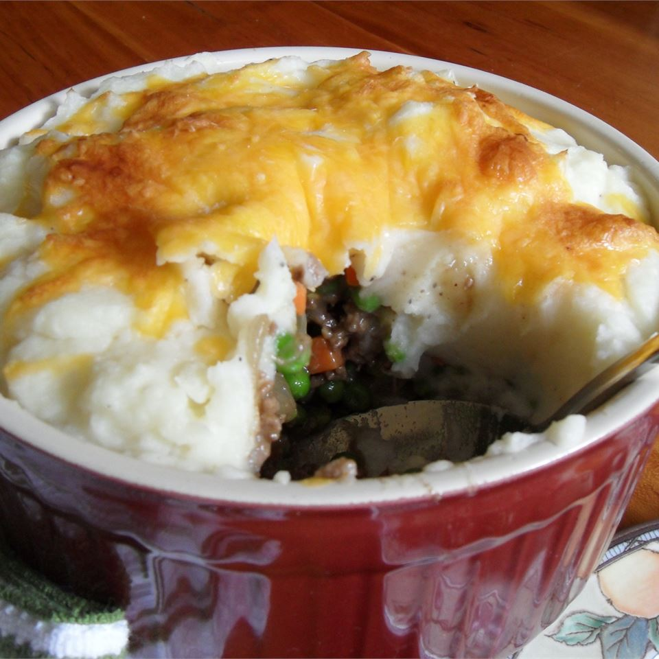

Shepherd's Pie

Gather the family round with this quick and easy shepherd's pie recipe. The meat mixture can be made ahead and frozen. You can also substitute
instant potatoes for the real thing if you're in a hurry. I especially love to use white cheddar in this recipe!
Ingredients
- 1 lb potatoes, peeled and chopped
- 1 tablespoon canola oil
- 1 pound ground beef
- 1 large onion, finely chopped
- 1 red bell pepper, finely chopped
- 2 cloves garlic, finely chopped
- 1 (14 oz) can beef broth
- 2 tablespoons ketchup
- 1 tablespoon soy sauce
- 1 tablespoon Worcestershire sauce
- 1 teaspoon mild curry powder
- 1 tablespoon cornstarch
- 2 tomatoes, coarsley chopped
- 1 (16 oz) package frozen mixed peas and carrots
- 1/4 cup milk
- 1 tablespoon butter
- 1 cup shredded extra sharp Cheddar cheese
- Salt and Pepper to taste
Directions
- Bring a large pot of lightly salted water to a boil. Add potatoes, and cook until tender but still firm, about 15 minutes; drain, and return
to pan.
- While potatoes are boiling, heat oil in a large skillet. Cook ground beef with onion, red pepper, and garlic until beef is evenly brown. Stir
in beef broth, ketchup, soy sauce, Worcestershire sauce, and curry powder. Bring to a boil, and simmer 3 to 4 minutes. Mix cornstarch with a
little water to form a paste, then stir into skillet with tomatoes, peas and carrots. Cook until thickened; season with salt and pepper. Spoon
into a casserole dish.
- Preheat oven on broiler setting. Add milk and butter to cooked potatoes, and whip until smooth and creamy. Spoon over meat mixture. Sprinkle
top with shredded cheese.
- Place under broiler for 3 to 5 minutes, or until cheese is melted and speckled with brown.
Source: allrecipes.com